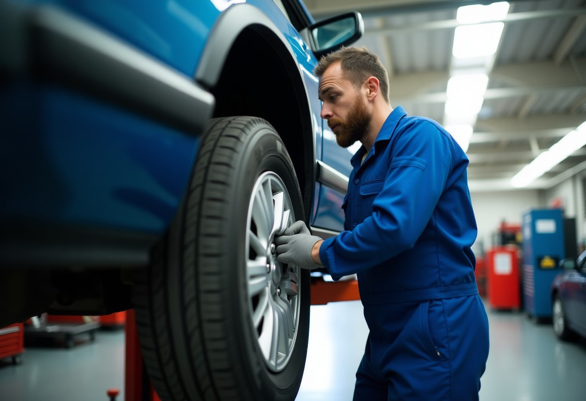
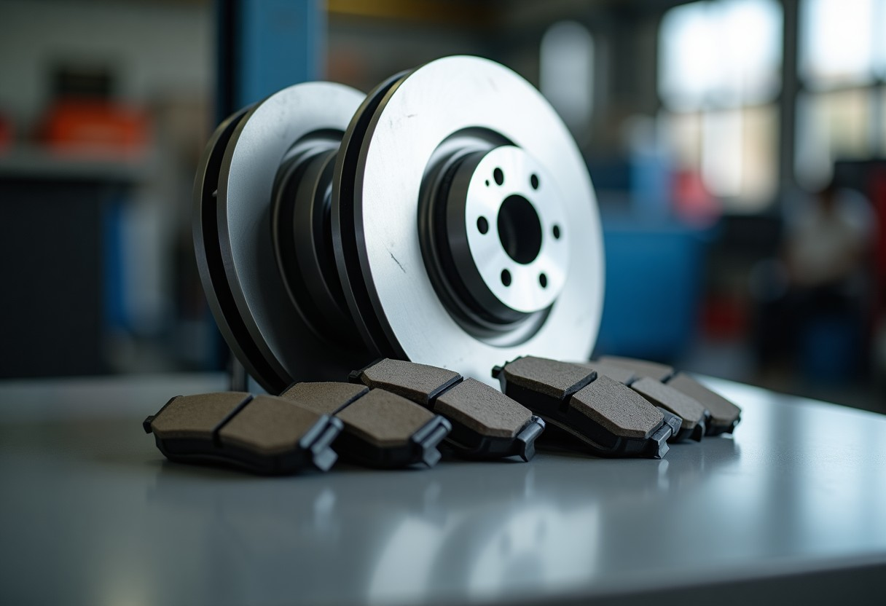
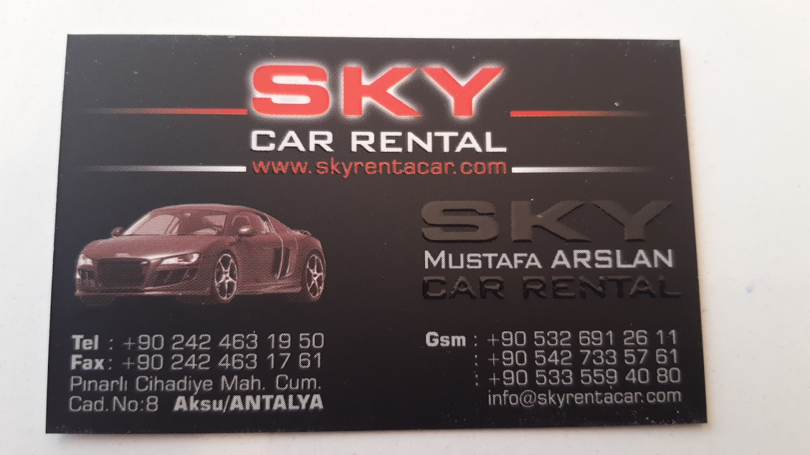
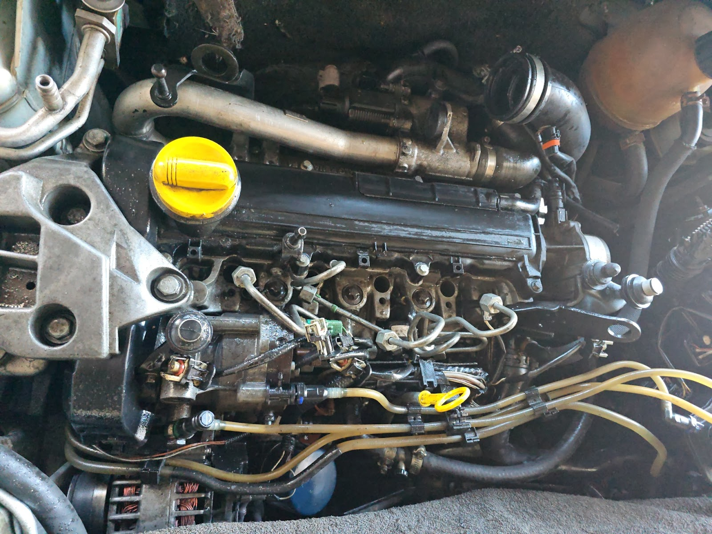
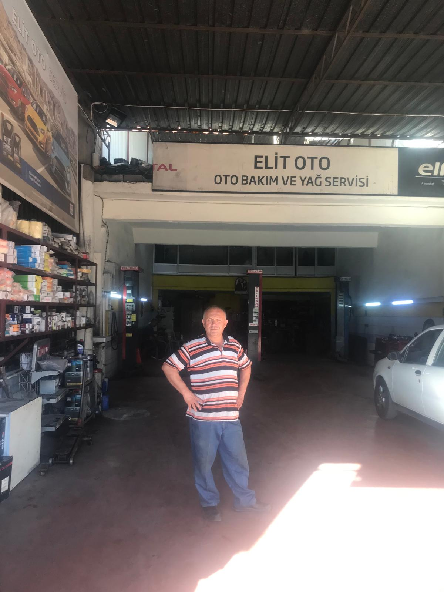
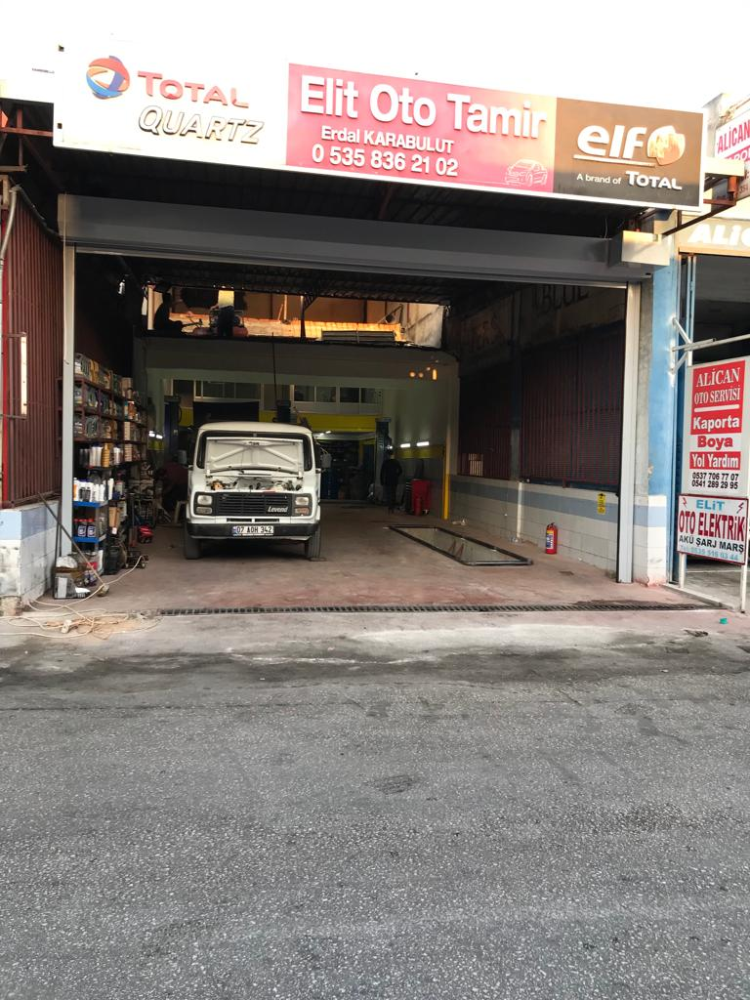

Arızayı doğru tespit eden, işini özenle yapan usta eller
Elit Oto Tamir, Muratpaşa'da aracınızın bakım ve onarımını tecrübeli ustalarıyla yapar. Arızayı önce birlikte konuşur, sonra işe başlarız.
★★★★★ 4.5 · 58 Google yorumu


Elit Oto Tamir, Muratpaşa'da aracınızın bakım ve onarımını tecrübeli ustalarıyla yapar. Arızayı önce birlikte konuşur, sonra işe başlarız.

Sesi, lambayı ya da hissi seçin: olası nedenler, ne kadar acil olduğu ve tahmini servis süresi anında. Sonucu tek dokunuşla ustaya gönderin.

Son bakım kilometresini ve yılda ne kadar yol yaptığınızı girin; değişmesi gereken parçalar ve tahmini tarih çıksın, takviminize hatırlatma düşsün.
Boş saatleri görüp randevu alın. Araç servisteyken plakanızı yazın; kabul, teşhis, parça ve hazır aşamalarını anlık görün.
Gün ve boş saati seçin, talebiniz WhatsApp'tan ustaya gitsin.
Örnek: 07 DJT 07 yazıp deneyin.
Yayında her aşama değiştiğinde müşteriye WhatsApp bildirimi de gider.
Yağ ve filtre değişimi dahil, aracınızın düzenli bakım kontrollerini yapıyoruz.
Cihaz bağlantısıyla hata kodlarını okuyor, sorunu ustanın tecrübesiyle yorumluyoruz.
Balata, disk ve fren hidroliği kontrolü ile gerekli onarımları yapıyoruz.
Motorda çıkan ses, performans kaybı ve arızaların nedenini bulup onarıyoruz.
Akü, şarj sistemi ve araç elektriğiyle ilgili arızalara çözüm üretiyoruz.
Günlük işinizde kullandığınız ticari araçların bakım ve onarımını yapıyoruz.




Araç dükkana geldiğinde usta konuyla bizzat ilgilenir. Arıza tespiti tecrübeyle ve birebir yapılır.
Müşteri kitleme peşinde değiliz. Yapılacak işi olduğu gibi anlatır, gereksiz işlem önermeyiz.
İşe özen gösterir, her aracı titizlikle onarırız. Yıllardır aynı müşterilerin tekrar gelmesi bunun göstergesidir.
Binek araçların yanı sıra ticari araç sahiplerine de güvenle hizmet veririz.
📍 Cumhuriyet, 666. Sk., 07010 Muratpaşa/Antalya
🕑 Pzt–Cmt 07:30–19:00 · Paz kapalı